Each post is 1080 × 1350 (Instagram 4:5). Download one at a time or grab all of them in a zip. The caption for each post is under it, with a copy button. Keep “Search data, not science” in every caption.
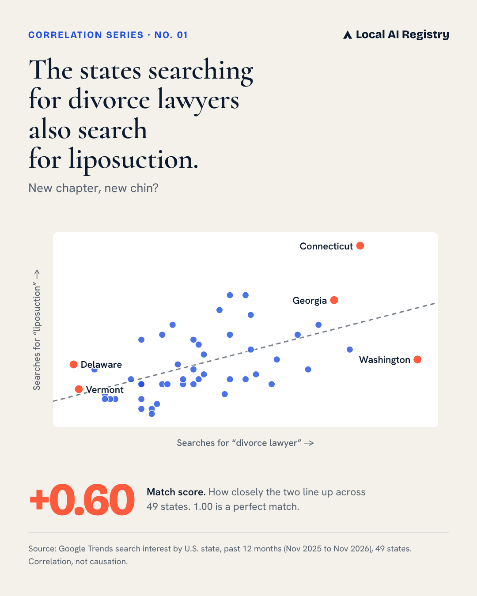
No. 01
Caption
Breakups and body contouring travel together. Across 49 states, the places that Google “divorce lawyer” the most also Google “liposuction” the most (match score 0.60). Connecticut and Georgia sit near the top of both. Does a divorce make you want lipo? We have no idea. Search data, not science.
Which state surprised you?
No. 02
Caption
Swipe, match, lift? States that search for the Hinge dating app the most also search for facelifts the most. With a match score of 0.76, it is the tightest pair we found. California and Nevada lead on both. South Dakota and Arkansas sit low on both. Correlation, not causation. Search data, not science.
Tag someone on Hinge.
No. 03
Caption
Some states work on the relationship. Some work on the jawline. A lot of them do both. Across 49 states, searches for “couples therapy” and “facelift” line up closely (match score 0.66). New York ranks high on both. Search data, not science.
Which one would you book first?
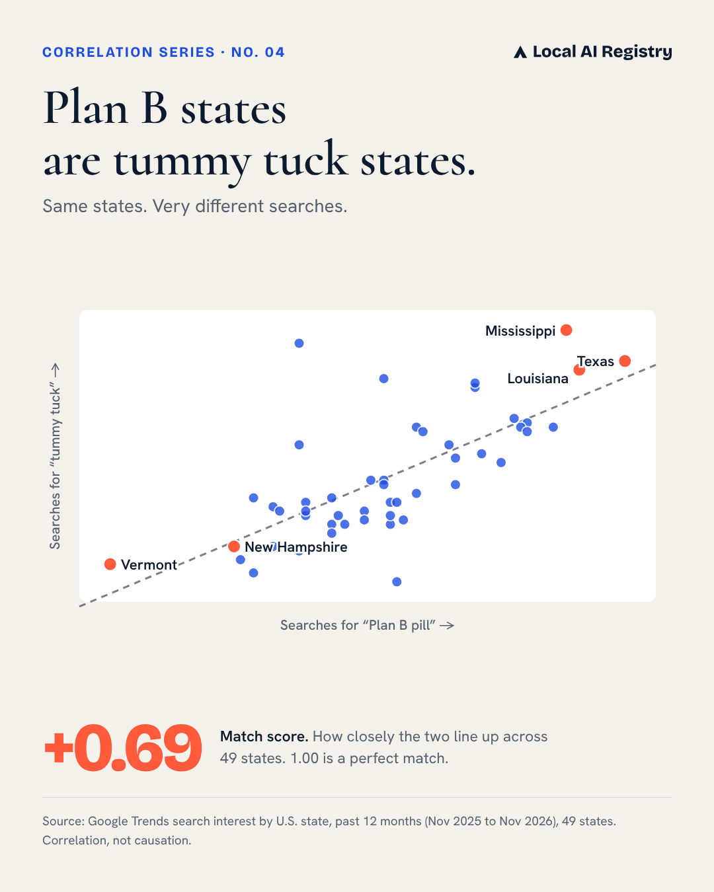
No. 04
Caption
One of the strongest pairs in the series (match score 0.69). The states that search for the Plan B pill the most also search for tummy tucks the most. Mississippi, Texas and Louisiana top both lists. Vermont and New Hampshire sit low on both. Does one lead to the other? No idea. Correlation, not causation. Search data, not science.
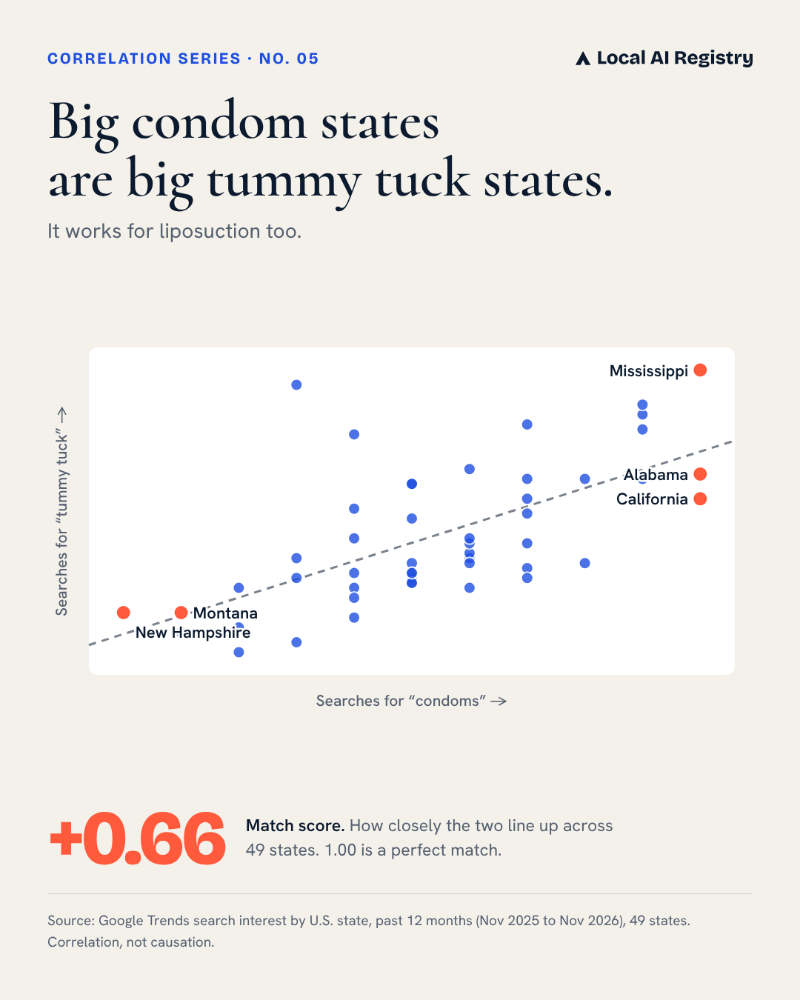
No. 05
Caption
Planning ahead, in more ways than one. The states that search for condoms the most also search for tummy tucks the most (match score 0.66), and for liposuction too (0.50). Mississippi and Alabama rank high on both. Montana and New Hampshire rank low. Search data, not science.
Send this to your most prepared friend.
No. 06
Caption
Suspicion and surgery. States where people search “is he cheating” the most also search “tummy tuck” the most (match score 0.56). Mississippi tops both lists. New Hampshire and Nebraska ask the least. Is it a revenge body plan? Search data can't tell you that. Correlation, not causation.
What would you do first?
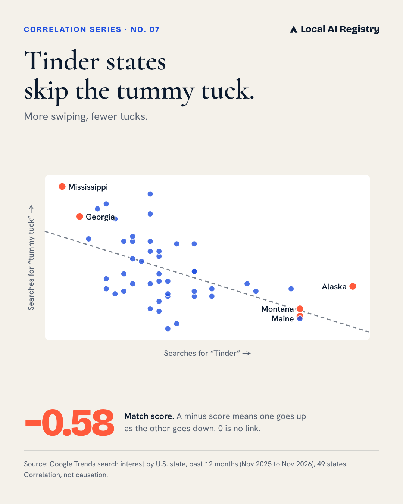
No. 07
Caption
Here's one that runs the other way. The more a state searches for Tinder, the less it searches for tummy tucks (match score −0.58). Alaska, Maine and Montana swipe the most and tuck the least. Mississippi and Georgia do the opposite. Hinge states, meanwhile, love a facelift. Search data, not science.
Tinder or Hinge?
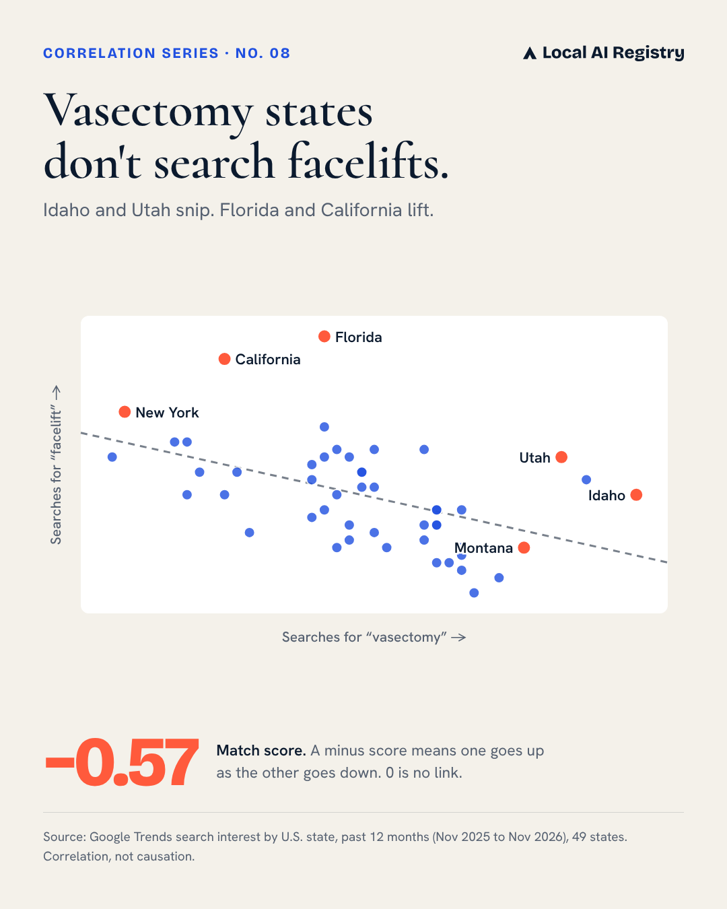
No. 08
Caption
Two very different kinds of procedure. The states that search for vasectomies the most search for facelifts the least (match score −0.57). Idaho, Utah and Montana lead on vasectomies. Florida, California and New York lead on facelifts. Correlation, not causation. Search data, not science.
Tag your state.
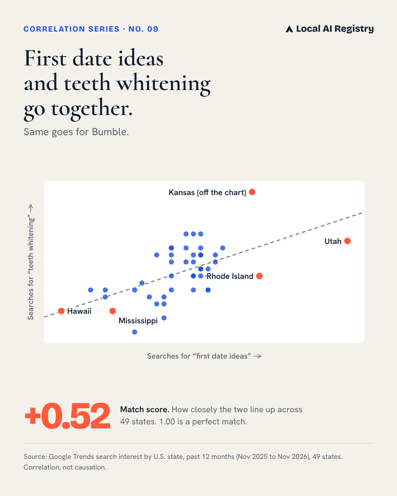
No. 09
Caption
Smile, you've got a date. States that search for first date ideas the most also search for teeth whitening the most (match score 0.52). Bumble searches follow the same pattern (also 0.52). Utah and Rhode Island are big on date planning. Kansas searches teeth whitening more than any other state. Search data, not science.
Best first date you ever had?
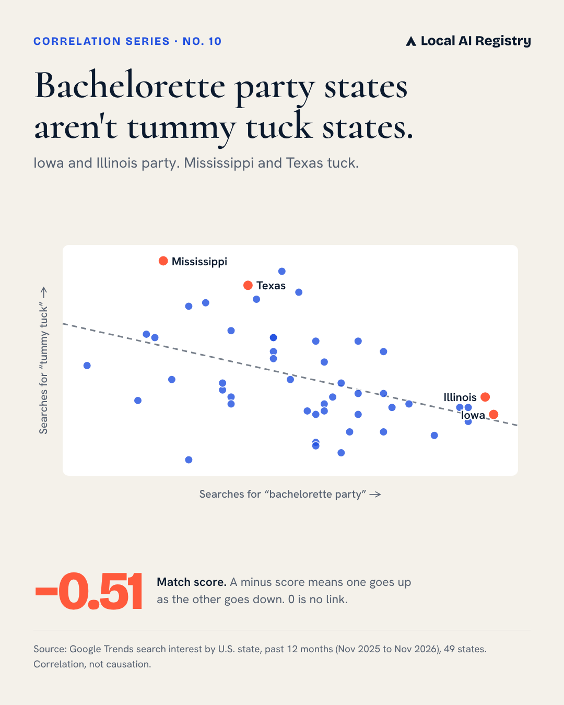
No. 10
Caption
The more a state searches for bachelorette parties, the less it searches for tummy tucks (match score −0.51). Iowa, Illinois and South Dakota plan the parties. Mississippi and Texas plan the tucks. Correlation, not causation. Search data, not science.
Who's planning a bachelorette right now?
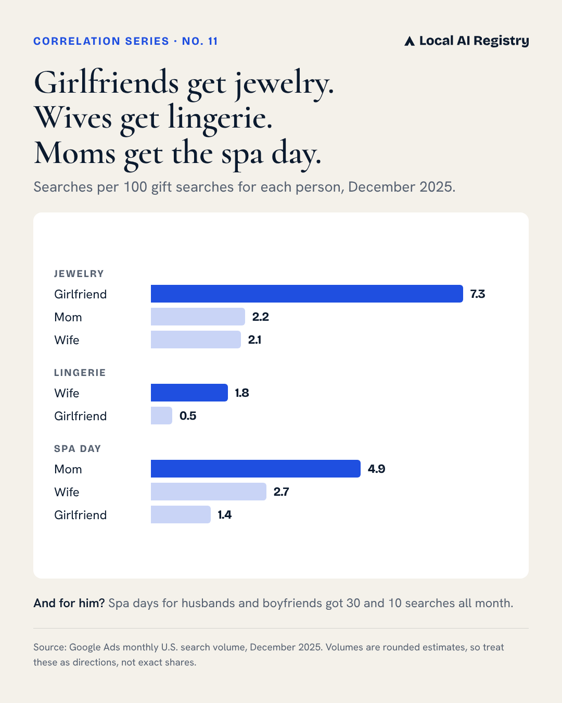
No. 11
Caption
Shopping for the holidays? The search data has opinions. For every 100 “gifts for girlfriend” searches in December, about 7 were for jewelry. Wives were the top lingerie searches. Moms got the most spa day searches of anyone. Husbands and boyfriends? Basically never a spa day: 30 and 10 searches all month. Search data, not science.
Who's getting a spa day from you this year?
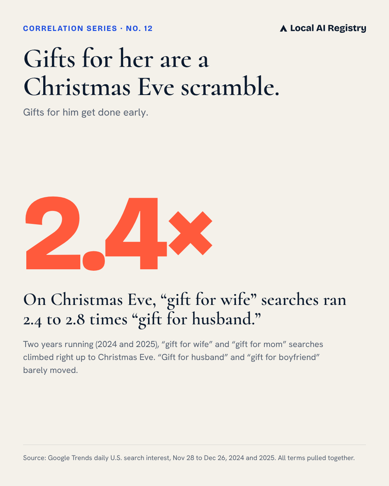
No. 12
Caption
Who's still shopping on December 24th? On Christmas Eve, searches for “gift for wife” ran 2.4 to 2.8 times searches for “gift for husband,” two years in a row. Gifts for her climb right up to the last minute. Gifts for him barely move. Search data, not science.
Tag the last-minute shopper in your life.
No. 13
Caption
New car, new face? States that search for Tesla the most also search for facelifts the most (match score 0.83, one of the strongest in the series). Tesla states also lean toward Botox (0.54) and med spa searches (0.55). California, Florida and Nevada top the chart. Search data, not science.
Would you rather: Tesla or a facelift?
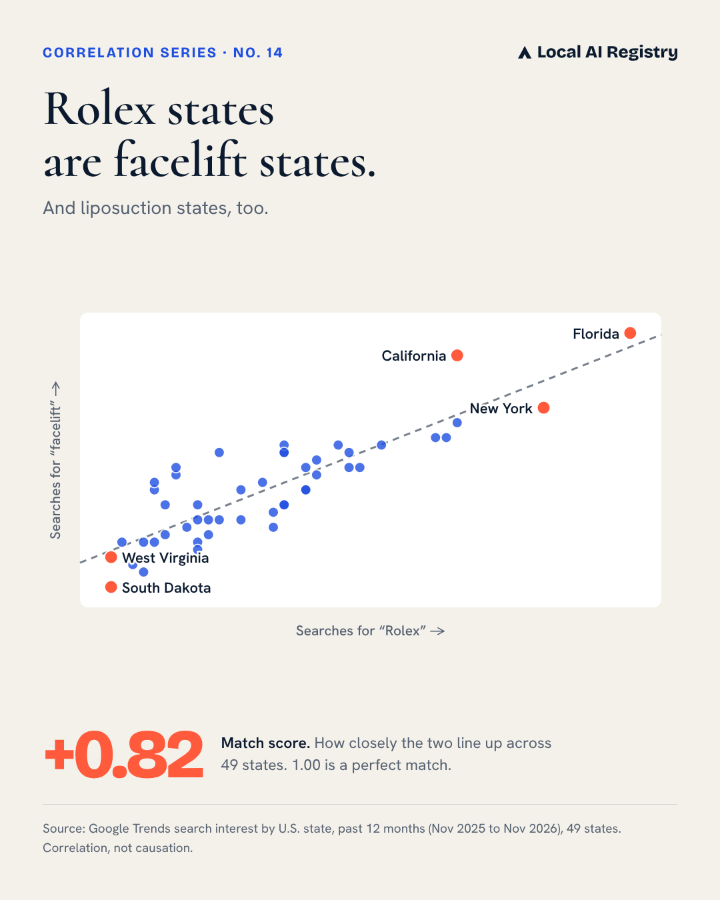
No. 14
Caption
Timeless, in more ways than one. States that search for Rolex the most also search for facelifts the most (match score 0.82) and for liposuction (0.76). Florida, New York and California lead. West Virginia and South Dakota sit low on both. Correlation, not causation. Search data, not science.
No. 15
Caption
Our strongest match yet (0.85). States that search for cologne the most also search for the Plan B pill the most. Louisiana, Texas and Mississippi top both lists. New Hampshire and Vermont sit at the bottom of both. We are not saying cologne works. We are just saying. Search data, not science.
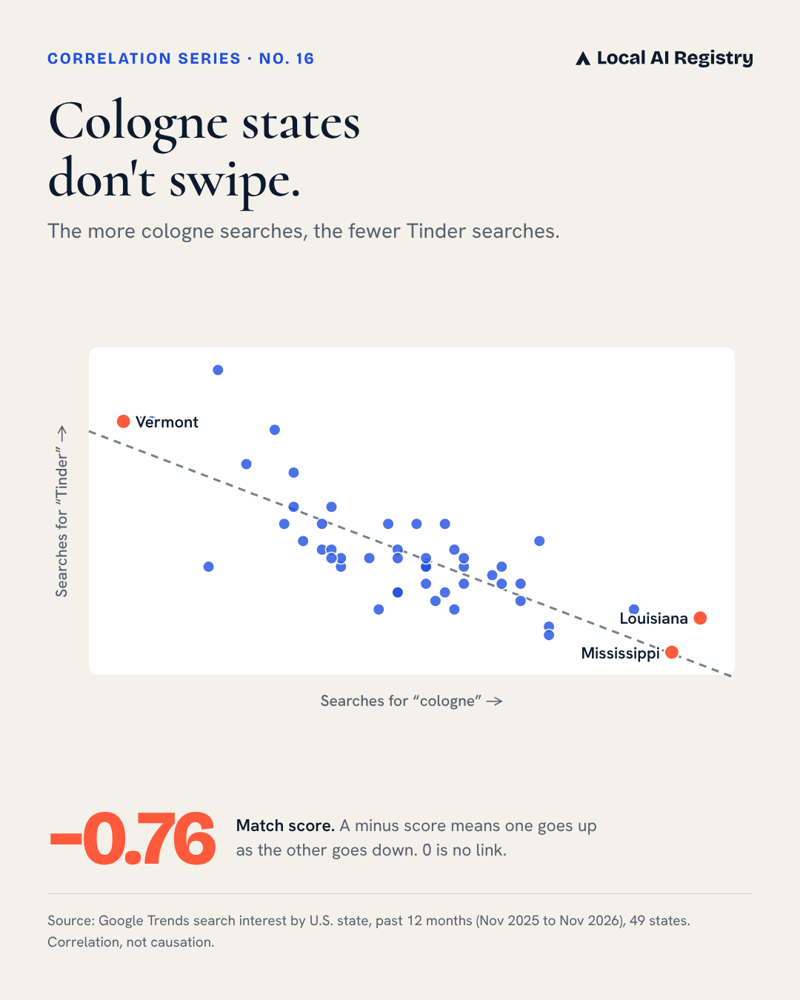
No. 16
Caption
Cologne or Tinder, pick one. The more a state searches for cologne, the less it searches for Tinder (match score −0.76). Mississippi and Louisiana go heavy on cologne. Vermont and Montana go heavy on Tinder. Search data, not science.
Team cologne or team swipe?
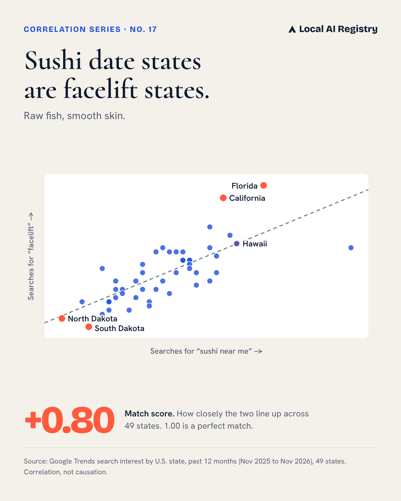
No. 17
Caption
States that search “sushi near me” the most also search for facelifts the most (match score 0.80). Florida, California and Hawaii lead on both. The Dakotas sit low on both. Correlation, not causation. Search data, not science.
Best sushi date spot near you?
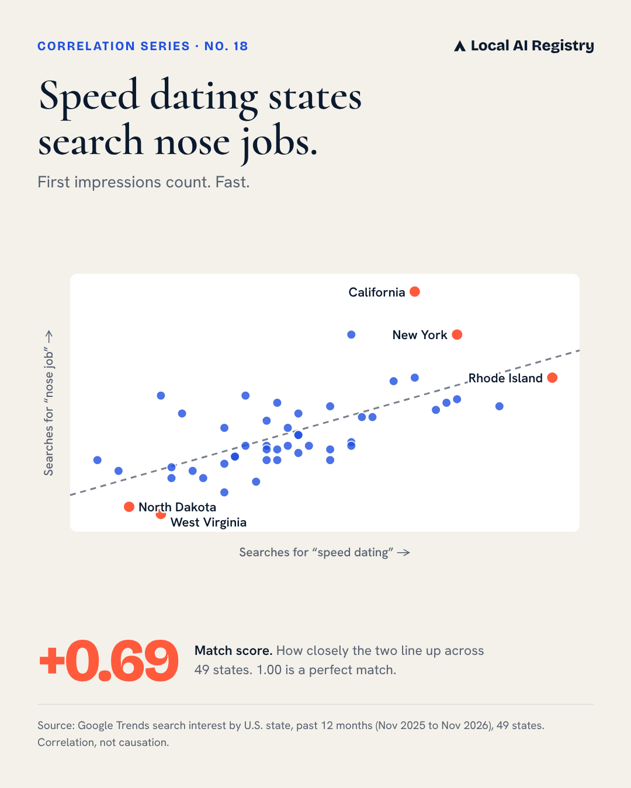
No. 18
Caption
When you only get three minutes, apparently the nose matters. States that search for speed dating the most also search for nose jobs the most (match score 0.69). Rhode Island, New York and California lead. Search data, not science.
Would you ever try speed dating?
No. 19
Caption
Follow the money. States that search “sugar daddy” the most also search for tummy tucks the most (match score 0.69). They also search more for cologne (0.59) and steakhouses (0.56). Mississippi, Arkansas and Louisiana lead. Vermont and Montana sit low. Search data, not science.
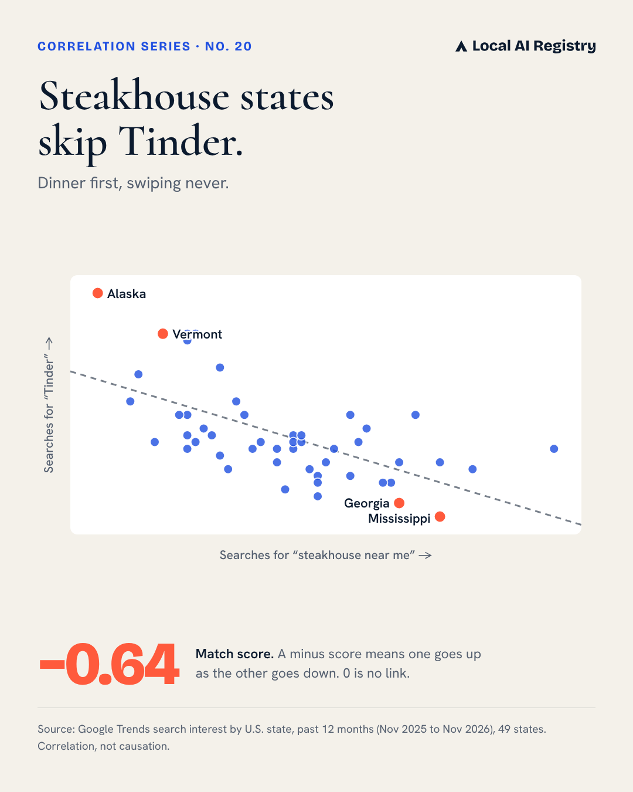
No. 20
Caption
Old school wins. The more a state searches “steakhouse near me,” the less it searches for Tinder (match score −0.64). Mississippi and Georgia book the steak. Alaska and Vermont swipe. Search data, not science.
Steak dinner or app date?
No. 21
Caption
Embrace the belly. The more a state searches for beer, the less it searches for tummy tucks (match score −0.64). Vermont and Maine search beer. Mississippi and Louisiana search tummy tucks. Correlation, not causation. Search data, not science.
Tag your beer buddy.
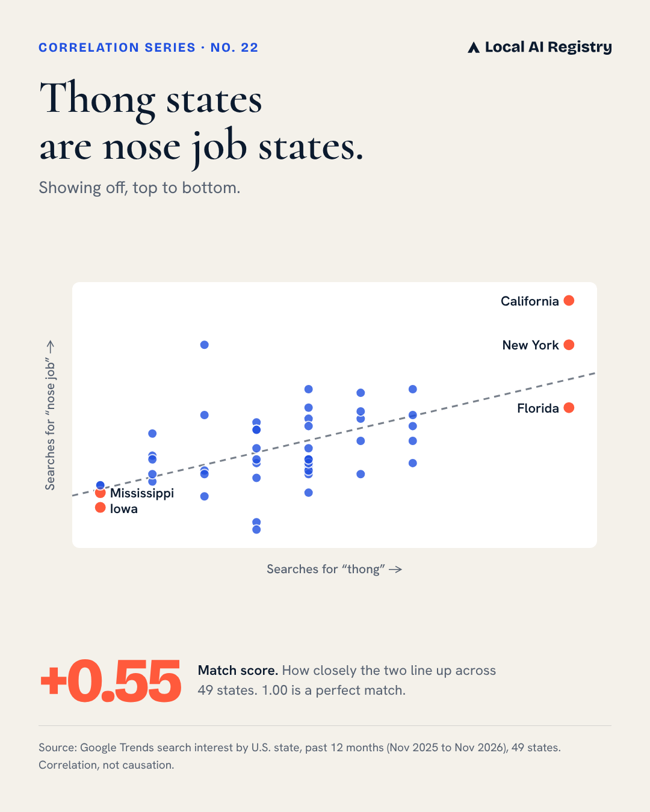
No. 22
Caption
States that search for thongs the most also search for nose jobs the most (match score 0.55). California, New York and Florida lead on both. Mississippi and Iowa sit low on both. Search data, not science.
No comment needed.
No. 23
Caption
Designer bag, designer body. States that search for Louis Vuitton the most also search for liposuction the most (match score 0.70) and for facelifts (0.69). Florida, New York and California lead. South Dakota and Maine sit low on both. Search data, not science.
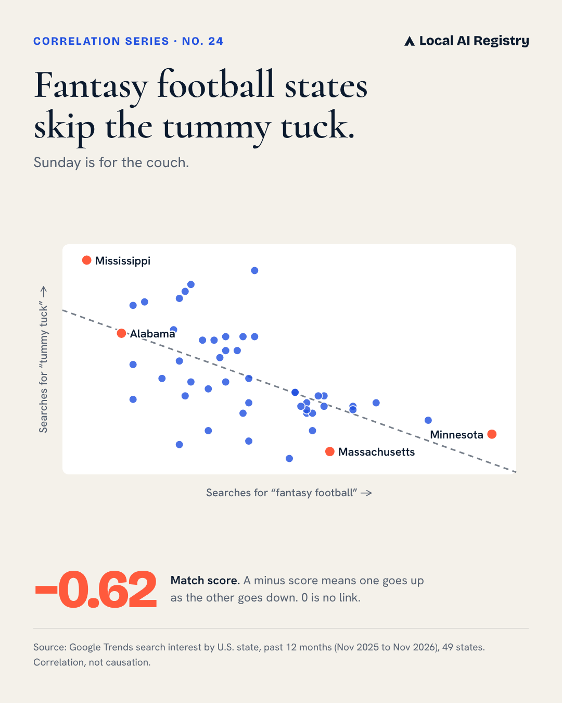
No. 24
Caption
Draft day beats surgery day. The more a state searches for fantasy football, the less it searches for tummy tucks (match score −0.62). Minnesota and Massachusetts set lineups. Mississippi and Alabama search tummy tucks. Search data, not science.
Tag your league's last-place finisher.
No. 25
Caption
It depends what you call it. States that search the casual term “boob job” the most also search for vasectomies the most (match score 0.58). Idaho, Utah and Alaska lead. Real Housewives states go the other way (−0.62). New Jersey and New York search “boob job” the least. Search data, not science.
No. 26
Caption
The more a state searches for Taylor Swift, the less it searches for the Plan B pill (match score −0.58). Rhode Island and Maine love Taylor. Mississippi and Louisiana search Plan B more. Correlation, not causation. Search data, not science.
Which era are you in?
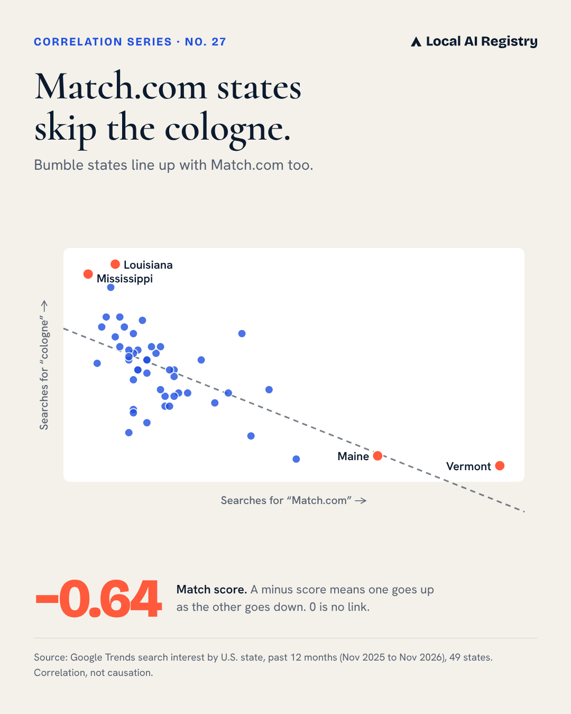
No. 27
Caption
The more a state searches for Match.com, the less it searches for cologne (match score −0.64). Vermont and Maine go for Match.com. Mississippi and Louisiana go for cologne. Match.com states also search Bumble more (0.55). Search data, not science.
What's the best dating app right now?
No. 28
Caption
States that search for Brazilian waxes the most also search for tummy tucks the most (match score 0.62). Georgia, Louisiana and Mississippi lead. Maine and Vermont sit low on both. Search data, not science.
Tag your summer-ready friend.
Every number comes from saved Google Trends and Google Ads pulls (state maps for Nov 2025 to Nov 2026). Match scores compare 49 states (Wyoming and DC left out). Correlation, not causation.
AI is changing every day. Local AI Registry's dedicated local AI research team keeps testing to find what works best.